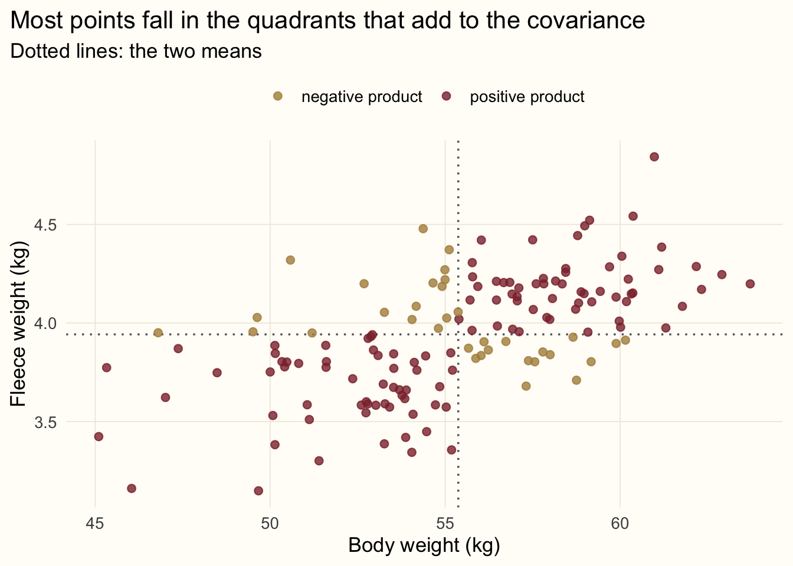
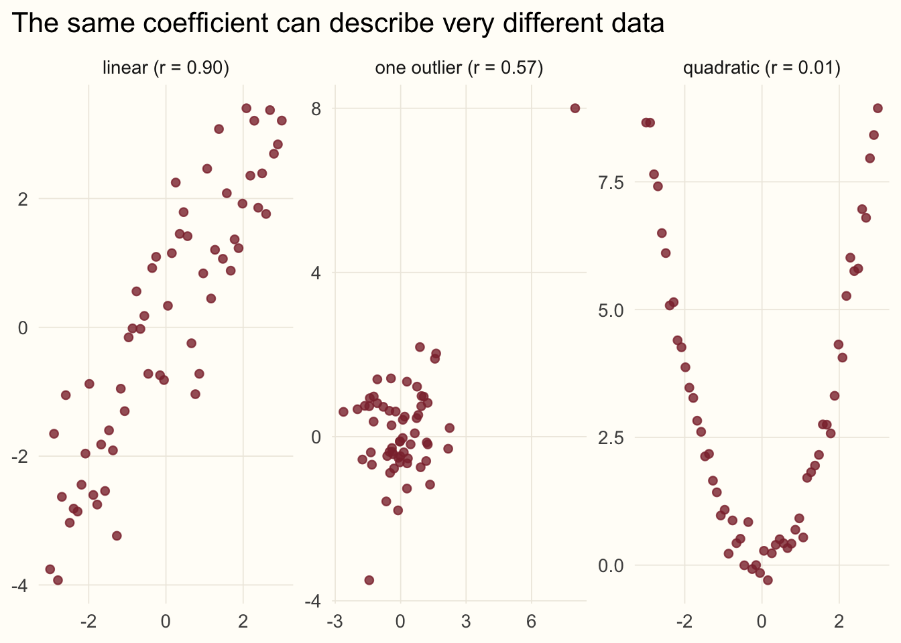

library(ggplot2)
# A shared look for the figures in this series
accent <- "#8c2f39"; gold <- "#b08d4a"; ink <- "#5d6070"
theme_set(
theme_minimal(base_size = 13) +
theme(plot.background = element_rect(fill = "#FFFDF8", colour = NA),
panel.grid.minor = element_blank(),
panel.grid.major = element_line(colour = "#EEEAE0", linewidth = 0.3),
plot.title.position = "plot")
)Statistics from the beginning: covariance and correlation
statistics
R
teaching
series
Second in a series on statistical tests: how two variables vary together, why covariance depends on units, and how correlation fixes that.
Series · Statistics from the beginning · Part 2
NoteAbout this series
This series is adapted from my 2017 lecture notes, Introduction to Statistical Tests (original PDF). Part 1 covered location and spread of a single variable. This part looks at two variables at once. Next come the tests themselves.
From one variable to two
Variance told us how much a single variable scatters around its mean. When we have two variables, say \(x\) and \(y\), a more interesting question appears: when \(x\) is above its mean, is \(y\) also above its mean? Do the deviations of the two variables tend to point the same way?
Back to our sheep. Let us simulate 150 ewes, recording body weight and the weight of the fleece shorn from each. Heavier animals tend to carry more wool, so we build in a positive relationship:
set.seed(23)
n <- 150
ewes <- data.frame(body_kg = rnorm(n, mean = 55, sd = 4))
ewes$fleece_kg <- 1.2 + 0.05 * ewes$body_kg + rnorm(n, sd = 0.25)
head(round(ewes, 2), 4) body_kg fleece_kg
1 55.77 4.31
2 53.26 3.39
3 58.65 3.93
4 62.17 4.29Covariance
Covariance multiplies, for each animal, the deviation of \(x\) from its mean by the deviation of \(y\) from its mean, and averages the products (with the same \(n - 1\) as for variance):
\[ \mathrm{Cov}_{x,y} = \frac{\sum (x - \bar{x})(y - \bar{y})}{n - 1}. \]
The sign of each product is what matters. If both deviations are positive (heavy animal, heavy fleece) or both are negative (light animal, light fleece), the product is positive. If one is positive and the other negative, the product is negative. Drawing lines through the two means splits the plot into four quadrants and shows this directly:
ewes$sign <- ifelse((ewes$body_kg - mean(ewes$body_kg)) *
(ewes$fleece_kg - mean(ewes$fleece_kg)) > 0,
"positive product", "negative product")
ggplot(ewes, aes(body_kg, fleece_kg, colour = sign)) +
geom_vline(xintercept = mean(ewes$body_kg), colour = ink, linetype = "dotted") +
geom_hline(yintercept = mean(ewes$fleece_kg), colour = ink, linetype = "dotted") +
geom_point(size = 2, alpha = 0.8) +
scale_colour_manual(values = c("positive product" = accent, "negative product" = gold)) +
labs(x = "Body weight (kg)", y = "Fleece weight (kg)", colour = NULL,
title = "Most points fall in the quadrants that add to the covariance",
subtitle = "Dotted lines: the two means") +
theme(legend.position = "top")
Most of the points lie in the upper right and lower left quadrants, so the sum is positive: positive covariance means that \(y\) tends to increase with \(x\). If the relationship ran the other way, most points would fall in the other two quadrants and the covariance would be negative. If the quadrants were populated about evenly, the positive and negative products would cancel and the covariance would be close to zero.
cov(ewes$body_kg, ewes$fleece_kg)[1] 0.6676829There is a neat connection to the previous part. Substitute \(x\) for \(y\) in the formula and you get \(\sum (x - \bar{x})^2 / (n - 1)\), which is exactly the variance. Variance is the covariance of a variable with itself:
c(cov = cov(ewes$body_kg, ewes$body_kg), var = var(ewes$body_kg)) cov var
14.25627 14.25627 Covariance depends on the units
Like variance, covariance is scale dependent. Suppose a colleague records the same fleece weights in grams rather than kilograms. Nothing about the animals has changed, yet:
fleece_g <- ewes$fleece_kg * 1000
c(kg = cov(ewes$body_kg, ewes$fleece_kg),
g = cov(ewes$body_kg, fleece_g)) kg g
0.6676829 667.6828594 The covariance grows a thousandfold. Its size says nothing about how strong the relationship is, so we cannot compare covariances between different pairs of variables, or judge whether 0.4 is “large”. We need to remove the units.
Correlation
We already know how to remove units: standardise. Dividing the covariance by the standard deviations of both variables gives the Pearson correlation coefficient,
\[ \mathrm{Cor}_{x,y} = \frac{\mathrm{Cov}_{x,y}}{\sqrt{s_x^2 \cdot s_y^2}} = \frac{\mathrm{Cov}_{x,y}}{s_x \, s_y}. \]
It is bounded between \(-1\) and \(1\): \(1\) means a perfect increasing linear relationship, \(-1\) a perfect decreasing one, and \(0\) no linear relationship. And now the choice of units does not matter:
c(kg = cor(ewes$body_kg, ewes$fleece_kg),
g = cor(ewes$body_kg, fleece_g)) kg g
0.5927476 0.5927476 Here is the fact I promised at the end of Part 1: correlation is simply the covariance of the z-scores. Standardise both variables, compute their covariance, and you have the correlation:
z_body <- (ewes$body_kg - mean(ewes$body_kg)) / sd(ewes$body_kg)
z_fleece <- (ewes$fleece_kg - mean(ewes$fleece_kg)) / sd(ewes$fleece_kg)
c(cov_of_zscores = cov(z_body, z_fleece),
cor = cor(ewes$body_kg, ewes$fleece_kg))cov_of_zscores cor
0.5927476 0.5927476 What correlation does not tell you
A correlation coefficient is one number, and one number can hide a lot. Four small caveats are worth keeping in mind.
It only sees linear relationships. Perfect dependence can give a correlation of zero if the shape is not a line. Below, \(y\) is completely determined by \(x\), yet the correlation is about zero, because the left and right halves of the curve cancel:
set.seed(5)
x <- seq(-3, 3, length.out = 60)
shapes <- rbind(
data.frame(panel = "linear", x = x, y = x + rnorm(60, sd = 0.9)),
data.frame(panel = "quadratic", x = x, y = x^2 + rnorm(60, sd = 0.3)),
data.frame(panel = "one outlier",
x = c(rnorm(59), 8), y = c(rnorm(59), 8))
)
r <- sapply(split(shapes, shapes$panel), function(d) cor(d$x, d$y))
shapes$panel <- factor(shapes$panel, levels = names(r),
labels = sprintf("%s (r = %.2f)", names(r), r))
ggplot(shapes, aes(x, y)) +
geom_point(colour = accent, size = 1.8, alpha = 0.8) +
facet_wrap(~ panel, scales = "free") +
labs(x = NULL, y = NULL, title = "The same coefficient can describe very different data")
It is sensitive to outliers. In the right-hand panel, 59 unrelated points plus a single extreme one produce a sizeable correlation, just as one mistyped sheep distorted the mean in Part 1. Always plot your data before trusting the number.
Independence implies zero covariance, but not the other way round. If two variables are independent, their covariance is zero. The parabola shows that the converse fails: zero correlation means no linear relationship, not no relationship.
Correlation is not causation. Body weight and fleece weight move together, but that alone does not tell us whether one drives the other, whether both depend on age or nutrition, or whether it is coincidence. Correlation is a description of the sample, not an explanation of it.
What’s next
We can now describe one variable (location and spread) and the relationship between two (covariance and correlation). That is enough vocabulary to start asking questions of the data. In the next part we begin with statistical tests: the difference between parametric and non-parametric tests, and checking normality, which is where most analyses start.
Previous: location and spread. Next in the series: statistical tests, beginning with normality.